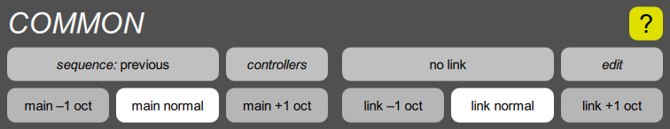

COMMON section

This section contains parameter clusters that aren’t directly related to the sound generation:
- The Sequence cluster determines what program is selected next, when you tap the Sequence Program footswitch. Its button shows its current setting.
- The Controllers cluster contains the keyboard algorithm, and various options for the footswitches and optional ribbon.
- The Link cluster contains parameters that apply when the current program is linked to another stored program (or to itself). Its button shows the current link mode and program.
- The Edit cluster determines what parameter, or A/B pair of parameters, is connected to the parameter control on the Digital Chroma’s control panel.
It also has two octave transposition parameters, one for the Main sound and one for the Link, each of which has three settings, down one octave, normal, and up one octave. These are on the main screen since they are often useful during performance.
This is called the “common” section because a future version of the Digital Chroma may support more than one sound architecture, in which case all architectures will have the same set of common parameters.